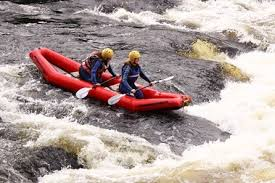
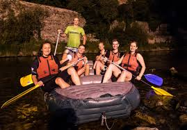

Choose the trip that fits your schedule and skill level. Ready to book or have questions? Contact Us.
Half Day Expedition
Murchison Falls __Half Day
Duration: Half Day — Difficulty: Moderate
This adrenaline-packed half-day run targets first-time thrill seekers and intermediate paddlers.
Includes
safety briefing, gear, and a short river-side lunch. Expect continuous rapids with several
memorable
drops.
What to bring: water-resistant shoes, quick-dry clothing, sunscreen. Maximum
group size:
8.

Full Day Expedition
Full Day Adventure
Duration: Full Day — Difficulty: Intermediate
The Big Adventure full-day excursion of Murchison Falls Rafting Company covers multiple major
rapids and scenic river stretches.
Includes professional
guiding, picnic lunch, and river photography. Great for paddlers who want a full experience
without overnight
camping.
Includes: guide, lunch, safety briefing, dry bag for valuables.

Multi-Day Expedition
Multi-Day Expedition
Duration: 3+ Days — Difficulty: Advanced
Immerse yourself in an extended river journey with camp nights, full logistics support, and
expert wilderness
guides. Ideal for experienced rafters seeking remote sections and extended whitewater
challenges.